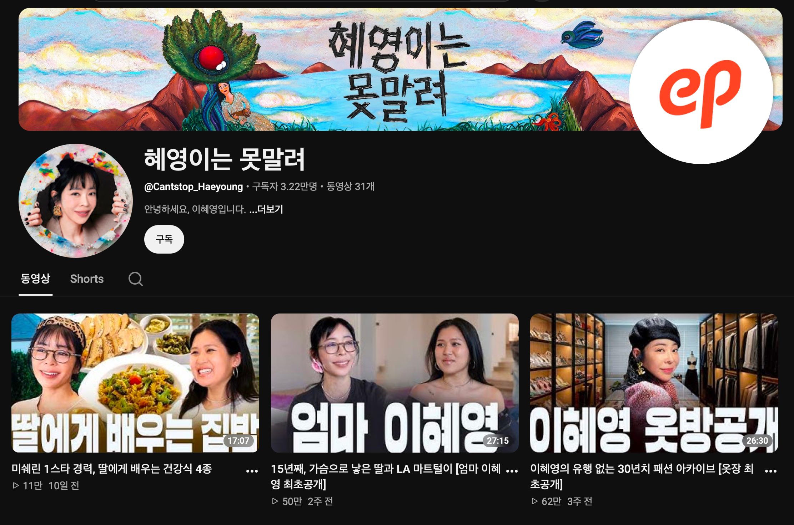

(자료 제공: 스튜디오 에피소드)
“오랫동안 유지하는 채널들에는 각각의 비결이 있다고 생각했다. 여러 가지 카테고리 채널마다 1등을 할 수 있는 채널을 만들면 유튜브를 보시는 분들도 다양한 카테고리에서 1등이 되는 채널들은 꼭 놓치지 않고 보실 거라고 생각했다.”
Q. 셀럽 IP를 기반으로 콘텐츠를 제작하고 있는 것으로 알고 있다. 스튜디오 에피소드에 대한 소개 부탁드린다.
(이) 셀럽을 기반으로 유튜브에는 다양한 카테고리들이 있다. 그런 ‘카테고리별로 1등을 하는 채널들을 만들자’라는 콘셉트를 가지고 콘텐츠를 만들고 있는 회사다. 동시에 다양한 브랜드를 갖고 있다. 말하자면 셀럽 IP를 통해서 콘텐츠를 만들고, 나아가 브랜드 IP 확장까지 연결하는 회사다.
Q. 최근 가장 관심을 쏟고 있는 콘텐츠는 무엇인가?
(이) 현재 저희 회사에서는 27~28개 채널을 운영하고 있고, 저는 그 중 <조승연의 탐구생활>이라는 채널을 7년 정도 연출하고 있다. 가장 최근에 오픈한 채널은 <혜영이는 못말려>라는 채널이다. 혜영님이 굉장히 오랫동안 암 투병을 하셨는데, 셀럽이 어려운 시기를 극복하고 유튜브를 통해 다시 대중들을 만나는 그런 과정들을 잘 보여줄 수 있는 채널이다. 지금 런칭한지 2주 정도 되었는데 두 번째 영상에서 50만 조회 수 정도 나왔다. 30~40대에서 50대까지 옛날 팬들이 응원을 많이 해 주시고 있다.
“진정성 있는 셀럽과 그 카테고리 영역에서 전문성을 갖고 있는 PD가 만나면 플러스가 된다. 무엇보다 중요한 것은 셀럽을 좋아하는 PD가 제작하는 것이다. 이때 매력이 극대화된 채널들이 만들어진다고 생각한다.”
Q. <조승연의 탐구생활>, <강형욱의 보듬TV>, <추성훈>까지 론칭한 채널들마다 성공하고 있다. 셀럽을 다룬 콘텐츠에 대한 흥행 감각이 남다른 것 같다. 스튜디오 에피소드만의 성공 비결이 있는가?
(이) 셀럽 채널을 오픈할 때 가져가는 어떤 공식 아니면 선정 기준 같은 것들이 있다. 유튜브에는 먹방, 뷰티, 여행, 토크쇼, 예능 형식 등 정말 다양한 카테고리의 채널들이 있다. 오랫동안 유지하는 채널들에는 각각의 비결이 있다고 생각했다. 그래서 ‘여러 가지 카테고리 채널마다 1등을 할 수 있는 채널을 만들자’ 그러면 유튜브를 보시는 분들도 다양한 카테고리에서 ‘1등이 되는 채널들은 꼭 놓치지 않고 보실 거다’ 는 취지에서 카테고리별로 1등이 될 수 있는 채널을 운영하는 게 좋겠다고 생각했다.
(이) 카테고리별 넘버원 채널을 만들기 위해서 가장 중요한 것은 셀럽이 얼마나 진정성 있게 유튜브 채널에 임할 수 있느냐라고 생각했다. 다양한 방송에서 출연자로 활동을 많이 하시던 분들이지만, 내 채널이 생긴다는 것은 내가 어디에 출연하는 게 아니라, 나를 보러 사람들이 찾아오는 것이기 때문에 팬덤 혹은 대중들과 같이 소통할 수 있는 진정 있는 마음으로 임할 수 있는 분들만 채널을 오픈하도록 하고 있는데, 그런 부분이 제일 중요하다고 생각했다.
(이) 더 나아가서 채널을 만들고 운영하는 제작진이 중요하다. 제작진 역시 각자가 잘할 수 있는 콘텐츠의 영역들이 있다고 생각한다. 워낙 다양한 유튜브 포맷들이 있으니까. 포맷별로 그 맛을 잘 살리는 제작진이 있는 것 같다. 그래서 제작진의 특성에 맞게, 내부 인터뷰를 통해 ‘이 PD님은 이런 채널을 맡아서 하시면 잘하겠다’라는 데이터를 가지고 채널 개설에 대한 문의가 왔을 때 매칭을 한다. 진정성 있는 셀럽과 그 카테고리 영역에서 전문성을 갖고 있는 PD가 만나면 플러스가 되는 거다. 그럼에도 불구하고 PD가 셀럽을 좋아하지 않으면 채널 오픈을 하지 않는다. 그래서 어떤 셀럽이 문의가 왔을 때, 그 셀럽을 좋아하는 PD들을 모아 미팅을 하고 이를 통해 방향성이 맞았을 때 굉장히 매력이 극대화된 채널들이 만들어지는 것 같다.
“시청자들은 그 사람이 어떻게 성장하고, 발전해 나가고, 그 사람이 하는 얘기에 대해 관심을 가지고 콘텐츠를 본다. 유튜브에는 그런 스토리를 따라가고, 팬덤들이 모여서 그 서사를 반복해서 듣고 싶어 하는 경우가 많아 셀럽 IP 콘텐츠에 적격이다.”
Q. 다양한 방송 포맷이나 아이템이 많은데 그 중에서도 셀럽 IP를 기반으로 하는 콘텐츠에 집중하는 특별한 이유가 있는가?
(이) 처음부터 유튜브라는 플랫폼 자체가 어떤 인물에 대한 서사를 담기 좋은 플랫폼이라고 생각했던 것 같다. 그 이유는 유튜브를 보시는 분들이 가장 기대하는 것은 결국은 개인의 스토리라고 생각하기 때문이다. 시청자들은 그 사람이 어떻게 성장하고, 발전해 나가고, 그 사람이 하는 얘기에 대해 관심을 가지고 콘텐츠를 본다. 유튜브에는 그런 스토리를 따라가고, 팬덤들이 모여서 그 서사를 반복해서 듣고 싶어 하는 경우가 많기 때문에, 셀럽 IP가 유튜브에서 가장 오랫동안 살아남을 수 있다고 생각했다. 요즘 인스타그램의 구독이나 팔로우 메커니즘을 봐도 ‘내가 이 사람을 좋아하기 때문에 팔로우한다’라는 것들이 있다. 이 사람을 팔로우하고, 이 사람이 앞으로 어떤 것들을 해나가는지 궁금한 사람들이 많이 모이면, 그 팬덤이 곧 구독자가 되는 거다. 그런 형식 자체가 셀럽 IP 콘텐츠에 유리하다고 생각했다.
(이) 그리고 유튜브 알고리즘 때문이기도 하다. 유튜브 알고리즘의 큰 특징 중 하나가 반복 시청이다. 예를 들어서 오리지널 IP 콘텐츠 같은 경우는 내가 관심 있는 주제는 클릭해서 보지만, 관심 없는 주제는 안 볼 수 있다. 그런데 셀럽 IP 콘텐츠는 내가 이 사람을 좋아하면 이 사람이 하고 있는 모든 것에 관심을 가지고 (관련 있는 콘텐츠는) 다 눌러보기 때문에 이런 특성이 알고리즘에 유리하게 작동해서 셀럽 IP가 잘 되겠다고 생각했다.
Q. 채널 특성상 유명인을 주축으로 제작하는데 따르는 제약이나 한계도 있을 것으로 보인다. 어떤 어려움이 있고 그런 부분들을 어떻게 관리를 하고 있는가?
(이) 출연자가 곧 크리에이터기 때문에, 그리고 개인 채널을 운영해야 된다는 중압감이나 책임감이 있기 때문에 셀럽들이 출연자보다는 어떻게 보면 같이 만들어야 하는 제작자로서 임해 주시는 것 같다. 그래서 PD가 끌어내는 경우도 있지만, 셀럽의 스케줄이라든지 요즘 관심사든지, 만나고 싶은 사람이라든지, 그런 것들에 대해 많이 인터뷰하고 대화하면서 거기에서부터 힌트를 얻어 콘텐츠가 출발하는 경우가 많다. 그렇게 만들어졌을 때 반응도 좋은 것 같다.
그래서 어려움도 있지만 저희는 그걸 리스크라고 생각하기보다는 ‘관계 형성이 셀럽 채널의 핵심이다‘라는 생각을 갖고 임한다. PD들이 가장 신경 쓰는 부분은 이 사람과 어떻게 관계를 가지고 가야 채널이 좋은 방향으로 나갈 것인가이다.
“유튜브에서는 론칭 초기에 다양한 포맷들로 구성해서 테스트를 거친 후에 데이터를 기반으로 검증 후 채널 방향을 정한다. 따라서 유튜브 PD들은 좋은 콘텐츠 제작자이기도 해야 하지만, 동시에 데이터를 굉장히 잘 읽고 가설도 잘 세울 수 있어야 한다.”
Q. 셀럽 IP 채널의 기획부터 론칭 과정은 어떻게 되는가?
(이) 첫 번째는 셀럽이 먼저 니즈(요청)가 있어서, 내부에서 PD를 매칭하는 경우가 있고. 그다음엔 PD가 원해서 기획을 먼저 들어가고 셀럽에게 문을 두드리는 경우가 있다. 두 가지 방식 모두 직접 대면으로 인터뷰 시간을 N차를 가진다. 1~3회 정도 만나면서 셀럽과 PD가 아이디어들을 주고받으면서, 거기에서 나왔던 내용을 바탕으로 기획안을 만든다. 기획안은 보통 한 3개월 치에 대한 플래닝을 짠다. 3개월 치라고 하면, 월마다 매주 한 편씩의 콘텐츠를 생각했을 때 12편 정도다. 채널을 론칭했을 때 반응을 확신하는 채널들도 있겠지만 대다수의 채널은 어떤 것에서 터질지 확신할 수 없기 때문에, 다양한 포맷의 콘텐츠를 준비해 본다. 그게 토크쇼일 수도 있고, 먹방일 수도 있고, 브이로그일 수도 있다. 그렇게 다양한 포맷으로 콘텐츠를 기획해서 12개의 콘텐츠를 가지고 테스트를 해본다.
3개월 치 기획안에는 콘텐츠적인 기획도 있지만 채널의 디자인적인 분위기나 광고 전략, 그리고 어떤 시청자 층에게 접근할지, 어떤 광고 카테고리를 선점할 수 있을 것인지에 대한 것도 담겨져 있다. 촬영은 언제 촬영해서 몇 개를 세이브해서 갈 건지도 포함된다. 이런 계획까지 반영해서 PT(프리젠테이션)를 한다. PT를 통해서 이제 서로 이해도가 맞춰졌다는 생각을 가지면 촬영에 들어간다. 3편 정도에서 4편 정도의 콘텐츠가 모아지면 론칭 일자를 정하고, 론칭한다.
(이) 유튜브에서의 론칭 과정이 방송과 다른 부분은 그 12편에 대한 테스트를 통해서 채널의 방향성을 정할 수 있다는 것이다. 예를 들어 다양한 포맷들로 12편을 구성해서 3개월의 테스트를 거친 후에 데이터를 가지고 검증이 끝난 방향으로 채널을 가져간다. 그래서 결국은 잘 되는 포맷 위주로 남겨서 갈 수 있는 채널이다. 그리고 포맷이 잘 안 되면 새로운 콘텐츠를 계속 시도해 가면서 잘 되는 것들은 계속 확장 (하고), 잘 안 되는 것들은 계속 축소하고, 이렇게 유동성이 있게 가져갈 수 있는 게 셀럽 채널의 운영 노하우라고 할 수 있을 것 같다.
그래서 유튜브 PD들은 좋은 콘텐츠 제작자여야 한다는 것은 변함이 없지만, 동시에 데이터를 굉장히 잘 읽어야 한다. 그리고 가설도 잘 세울 수 있어야 한다. 그래서 ‘이 채널은 어떤 사람들한테, 어떤 콘텐츠로 접근했을 때, 반응이 있을 것인가’에 대한 나름대로의 가설을 설정해 보고, 그 가설이 맞는지 틀린지를 실험해 보는 사람들이라고 생각한다.
(이) 방송과 다르게 유튜브는 피드백이 굉장히 즉각적이다. 조회 수나 댓글을 통해서 콘텐츠에 대한 반응들이 바로바로 오기 때문에, 거기에 따라서 편성을 바꾸기도 한다. 방송 같은 경우는 1회 차부터 12회 차까지 매주 목요일마다 편성된다고 하면, 유튜브는 1편이 올라가고 나서 반응이 너무 좋으면, 갑자기 화요일에 추가 편성을 하는 것도 가능하고, 편성도 사람들이 보고 싶어 하는 영상 위주로 다시 바꿔서 간다. 그리고 그 콘텐츠에 대해서 추가로 바이럴하기 위해 쇼츠를 추가 제작해서 넣는 식으로 유동성 있게 진행을 한다.
“채널별 타깃에 맞춘 정교한 셀럽 매칭과 ‘웰메이드’제작을 향한 철저한 검증. 대중의 마음을 사로잡는 셀럽 IP 콘텐츠 탄생의 이면에는 카테고리별 전문성과 철저한 팩트 체크가 있다.”
Q. 셀럽을 섭외하는 기준이 있는가? 가령, 대중적 인지도는 어느 정도여야 하는지, 셀럽이 가지는 인간적 특성이나 진정성 등이 얼마나 중요한지 궁금하다. 27개 채널에 각각 중점을 두는 부분이 있는가?
(이) 27개 채널의 목표 타깃이 다 다르다. 현재 6개 팀이 있는데 그 중에는 누가 봐도 전문가라고 생각할 수 있는 사람이 있고. 그리고 뷰티·패션 팀이 따로 있다. 이쪽은 20대, 30대가 타깃이다. 뷰티 정보나 패션 정보를 정보로서 줄 수도 있고, 일상을 통해서도 전달할 수 있는 채널이 있다. 그리고 아이돌 팀이 있다. 아이돌 팀은 아이돌을 좋아하는 팬덤 문화를 잘 이해하고, 콘텐츠를 가지고 아이돌의 매력을 더 많이 보여줄 수 있는 채널이다.
각각 채널별로 다른 타깃들을 대상으로 채널을 만들고 있다 보니까, 그 카테고리에서의 영향력을 기준으로 선정을 하는 경우도 있지만, 그 카테고리에서 굉장히 뾰족하게 알고 있거나, 정보를 잘 다뤄줄 수 있는 분들을 선택해서 가는 경우도 있다. 그리고 PD 입장에서 봤을 때 매력이 감춰져 있지만 대중들이 봤을 때 보면 좋아할 것 같다는 관점을 가지고 출발하는 경우도 있다. 즉, 대중성이 있지만 또 다른 한편으로는 보여주지 않은 모습들이 많이 있다고 생각되는 분들을 선택하는 경우도 있다.
기본적으로 인지도가 있는 분들이면 그 인지도를 가지고 다른 관점에서 트위스트 할 수 있을 만한 포지션이 있으면 PD들이 좋아한다. 이런 매력을 극대화하는 과정에서 PD와의 합이 맞았을 때, 채널이 잘 되는 경우들이 있어서 한 가지로만 채널을 판단하지 않는다.
Q. 셀럽을 전면에 내세우는 콘텐츠의 특성을 고려하여 제작과정 전반에서 특별히 더 신경을 쓰는 부분이 있는가?
(이) 우선 팩트 체크가 매우 중요하다. 셀럽의 이름을 걸고 하기 때문에 잘못된 정보라든지 사회적으로 오해를 일으킬 수 있을 만한 내용을 확인한다. 그리고 특정 타깃만 보는 게 아니라 대중들이 보기 때문에, 자막이나 이미지도 신경을 많이 쓴다. 유튜브는 누구나 만들 수 있지만, (셀럽 IP 채널은) 셀럽이 참여하는 콘텐츠이기 때문에 제작 퀄리티도 어느 정도 수준 이상을 기대하시는 부분들이 있다 보니까, 웰메이드를 할 수 있도록 신경을 많이 쓰고 있다.
“방송이 편성의 논리라고 하면, 유튜브는 관계에 대한 논리다. 유튜브에서는 갑자기 편성이 바뀔 수도 있고, 사람들이 보고 싶어 하는 것을 갑자기 집어넣을 수 있다. 또한 유튜브에서는 시청자와의 공감을 이끌어 낼 수 있을 만한 콘텐츠를 만드는 것이 매우 중요하다.”
Q. 다양한 셀럽이 있지만 아무래도 방송인 셀럽이 많아 방송과 비교를 하지 않을 수 없을 것 같다. 기존 방송과 유튜브 영상의 가장 큰 차이는 어디에 있다고 보는가?
(이) 가장 큰 차이는 방송이 편성의 논리라고 하면, 유튜브는 관계에 대한 논리라는 점 같다. 유튜브에서는 갑자기 편성이 바뀔 수도 있고, 사람들이 보고 싶어 하는 것을 갑자기 집어넣을 수 있다. 그리고 제작물에 대해서 ‘날 것에 대한 수요가 크다’는 점인 것 같다. 시청자는 방송에서 워낙 기승전결이 탄탄한 콘텐츠를 보지만, 유튜브에서는 언제든지 보다가 나갈 수 있기 때문에 후킹한 부분들을 잘 살려서 콘텐츠를 만드는 것이 중요하다. 그리고 더 날 것에 대한 것들을 일부러 연출하기도 한다. 카메라가 돌기 전부터의 과정이라든지, 카메라가 꺼지고 난 다음에 분위기는 어떤지, 셀럽이 제작진들과 편하게 있을 때는 어떤 모습인지를 점점 더 궁금해하는 것 같다. 그래서 날것의 느낌을 잘 내기 위한 방법적인 부분들을 PD들도 많이 고민을 하게 되는 것 같다. 그러면서 또 오히려 탄탄하게 가져가야 하는 부분들이 있다. 시청을 오랫동안 유지하기 위해 2분에 한 번 정도는 재미있는 요소를 꼭 집어넣어서 사람들이 나가지 않는 요소를 만든다든지, 정보성 콘텐츠에서도 두괄식으로 콘텐츠를 만들거나 하이라이트를 앞에 넣어 ‘오늘 영상을 끝까지 보면 이런 베네핏이 있다’는 식으로 좀 알려주는 경우들이 있다.
Q. 시청자와의 소통도 방송보다 더 직접적일 것으로 보인다. 어느 정도 시청자 의견을 수용하는가?
(이) 시청자와의 소통이 너무 중요하다. 유튜브는 구글 기반의 플랫폼이기 때문에 데이터가 매우 중요하고, 인게이지먼트를 많이 따진다. 시청자에게 ‘구독과 좋아요 알림 설정해 달라’는 요청이 괜히 있는 게 아니라 정말 ‘좋아요’ 한 번 누르고, ‘공유’ 한 번 하고, ‘댓글’ 한 번 쓰는 것들이 알고리즘에도 영향을 많이 미치고, 반복 시청에 도움이 많이 되기 때문에, 콘텐츠 끝날 때 ‘이번 콘텐츠에 대한 의견을 남겨주세요’, ‘다음에 또 보고 싶어 하는 콘텐츠가 있으면 댓글을 남겨주세요.’ 같은 요청을 하기도 한다. 혹은 댓글의 콘텐츠를 가지고 기획에 반영해 보기도 한다. 유튜브는 공감을 이끌어 낼 수 있을 만한 콘텐츠를 만드는 것이 매우 중요하기 때문에, 많은 사람들이 ‘이 내용에 공감을 하고 있다’ 라는 것들을 보여주기 위한 장치로서 댓글을 또 많이 사용하고 있기도 하다.
“수익을 내는 모든 방법을 동원해야 한다고 생각한다. 어떻게 하면 광고주와 시청자가 모두 만족할 수 있는 콘텐츠를 만들 수 있는가가 이제는 너무 중요하다.”
Q. 스튜디오 에피소드의 비즈니스 전략이 궁금하다.
먼저 유튜브 자체에는 크게 세 가지 수익 모델이 있다. 첫 번째는 애드센스 수익이다. 애드센스 수익은 조회 수를 바탕으로 유튜브에서 광고비를 지급하는 것이다. 두 번째는 브랜디드 콘텐츠가 있다. 광고주가 이 채널의 어떤 콘텐츠 안에 PPL 형식으로 들어오거나, 아니면 브랜디드 형식으로 들어오는 방식이다. 세 번째로 커머스 영역이 있다. 우리 회사는 요즘 커머스 영역에 굉장히 관심을 많이 가지고 있다. 유튜브 콘텐츠를 보신 분들이 제품 구매까지 바로 연결될 수 있을 만한 구조를 짜서, 콘텐츠 시청이 소비까지 이어지는 수익 모델이 있다.
(현재 스튜디오 에피소드가 중점을 두는 비즈니스 모델은) 수익을 내는 모든 방법을 동원해야 한다고 생각하기 때문에 브랜디드 콘텐츠에 대한 부분도 간과할 수는 없는 것 같다. 어떻게 하면 광고주와 시청자 양쪽에서 다 만족할 수 있을 만한 콘텐츠를 채널에서 만들어 갈 수 있느냐도 이제는 너무 중요하다. 그 부분을 가장 잘하는 게 첫 번째 과제인 것 같다. 두 번째로는 커머스적인 부분이다. 결국에는 셀럽들이 콘텐츠를 통해서 본인의 가치를 더욱 극대화하고 싶은 부분들은 브랜드 운영이라든지, 브랜드와 협업하는 부분이라고 생각을 한다. 근데 스튜디오 에피소드는 이미 내부에서 다양한 채널을 통해 브랜드를 운영하는 노하우를 갖고 있어서 콘텐츠로 할 수 있는 다양한 영역 중에서 커머스나 브랜드 확장에 대해 중요하게 생각하고 있다.
Q. 성공적인 셀럽 IP를 접하다 보면 이를 확장하고 싶을 것 같다. 스튜디오 에피소드에서는 셀럽 IP를 활용하여 다른 장르나 산업으로 확장하려는 계획이 있는지 궁금하다. 혹시 이미 그러한 사례가 있다면 소개 부탁드린다.
(이) IP가 잘 성장한다는 것은 곧 팬덤이 많이 늘어난다는 것이기 때문에, 그 팬덤과 같이 해볼 수 있을 만한 시도들을 많이 했던 것 같다. 오프라인 모임, 굿즈 제작, 그리고 팝업을 열어서 제품과 크리에이터가 만나서 뭔가를 하는 경우들도 있었다. 콘텐츠 측면에서는 유튜브로 시작했지만, OTT로 확장한 경우도 있다. 대표적인 사례로 <야노시호 채널>은 초기에 8개 정도의 콘텐츠를 티빙과 같이 협업해서 제작했다. 유튜브에는 20분 정도의 미드폼 콘텐츠가 나가고 티빙 쪽에는 35분에서 40분 정도의 미방영분까지 합체된 콘텐츠를 동시에 송출을 했었다. 풀 버전을 보고 싶은 사람들은 OTT에서 보고, 유튜브에는 하이라이트 콘텐츠만 올라가는 형식도 있었고, 유튜브의 셀럽 IP가 아예 방송으로 나가게 됐었던 경우들도 있었다.
Q. 셀럽 채널의 글로벌 반응은 어떤가? 해외에서의 국내 셀럽 IP를 이용한 채널의 인지도는 어느 정도인가?
(이) 콘텐츠를 통해서 글로벌로까지 확장되는 경우는 아주 크지는 않은 것 같다. 그 이유는 저희가 제작을 할 때 콘텐츠 문법, 재미 요소, 자막 등을 한국 팬들이 좋아할 만한 감성으로 만들고 있기 때문이다. 기본적으로 어떤 채널이 콘텐츠만 가지고 글로벌 영향력이 일어나는 경우는 아주 크지 않은 것 같다. 하지만 원래 글로벌 팬덤을 갖고 있는 분들은 콘텐츠가 업로드되면 해외 팬덤들도 새롭게 그 셀럽에 대해서 마주할 수 있는 기회가 늘어나다 보니까, 그런 콘텐츠를 찾아 나서는 것 같다. 특히 아이돌 같은 경우는 동남아시아, 미주, 일본 팬덤을 많이 보유하고 있어 유튜브까지 연동되는 경우가 많은 것 같다.
하지만 한국 팬덤과 해외 팬덤을 한 번에 잡을 수 있는 콘텐츠 방향성은 어렵다. 기본적으로 셀럽 IP 자체가 콘텐츠만을 가지고 글로벌로 확장하는 것은 문법 자체를 다양화해야 되기 때문에 쉽지는 않은 것 같다.
“유튜브는 인물의 서사를 따라서 움직이기 때문에 셀럽의 관심사를 계속 보여주면서 시청자들이 이를 따라갈 수 있도록 새로운 성장 동력을 계속 개발해야 한다. 기존 방송이나 뉴미디어 모두 가장 중요한 것은 시청자가 콘텐츠를 많이 봐주는 것이고. 결국은 사람들이 많이 보는 곳에서 다양한 시도를 하는 노력이 필요하다.”
Q. 셀럽 IP 채널이 지속가능하기 위해 무엇이 필요하다고 생각하는가?
(이) <조승연의 탐구생활> 채널 같은 경우는 7년 정도를 유지하고 있는데, 포맷을 계속 바꿨던 것 같다. 조승연 작가님이 인문 역사 배경 전문가기 때문에 시작 자체는 사실 목표도 크지 않았다. 처음에는 ’역사를 좋아하는 분들 10만 명만 모았으면 좋겠다‘ 이렇게 생각으로 덕후 10만 명을 모으려면 어떤 콘텐츠를 해야 될까 고민을 하고, 역사를 좋아하시는 분들이 자주 찾아보시는 넷플릭스에 영화도 찾아보고, 서울에 있는 역사적인 장소를 찾아가기도 했었다. 근데 하다 보니까 구독자들도 늘어나고, 그러면서 영화 역사뿐만 아니라 한국에서 흥행하고 있는 작품들에 대한 외신 반응을 설명해 준다거나 작가님과 친분 있는 외국인들이 출연해서 그 나라 문화에 대해서도 이야기하는 등 다양한 시도를 했다. 최근에는 시청자들이 점점 가벼운 것을 원하다 보니까, ’언스트럭처 컨버세이션‘이라는 가벼운 주제를 만들어서 마치 작가님과 둘이서 대화하고 있는 것 같은 것들을 훔쳐 찍는 것 같은 느낌의 콘텐츠를 많이 만들게 됐다. ‘책 많이 읽으면 진짜 좋을까’, ‘여행은 진짜 도움이 될까’ ‘퇴근하고 나서 자기 개발해야 될까’ 같은 사람들이 평소에 관심 있어 하는 주제들을 그냥 편하게 이야기하는 형태로도 콘텐츠를 만들었는데. 이런 것처럼 셀럽이 관심 있어 하는 주제에 따라서 채널이 성장할 수 있다면 가장 좋다고 생각한다.
처음에 말씀드린 것처럼, 유튜브는 인물의 서사를 따라서 움직이기 때문에 이 사람이 지금은 어떤 거에 관심이 있는지를 계속 흘려주고, 보여주면서 시청자들이 따라갈 수 있도록 새로운 성장 동력 같은 것들을 계속 개발하려고 노력했던 것 같다.
Q. 뉴미디어 기반의 셀럽 IP 콘텐츠와 전통 방송 산업이 서로 시너지를 내며 공존할 수 있는 상생 방안에 대한 의견 부탁드린다.
(이) 스튜디오 에피소드는 스타트업으로 출발을 했다. 생존하기 위해 노력하면서 지금의 27개 채널이 만들어졌다. 그렇게 될 수밖에 없었던 이유는 채널이 잘 돼야 광고 수익도 있고 그러다 보니까 생존하는 방식으로 성장해 왔다. 어떤 것들을 사람들이 보고 싶어 하는가에는 항상 관심을 가졌던 것 같다. 저희한테는 기존 레거시의 문법을 다 파괴하더라도 사람들이 끝까지 보게 할 수 있으면 그게 곧 성공이었다.
그래서 기본적으로 시청자들이 좋아할 만한 웰메이드 콘텐츠를 만드는 것이 제일 중요한 것 같다. 시청자들의 취향이 너무 높아졌고 그걸 만족할 수 있는 콘텐츠를 제작하는 것이 모든 콘텐츠 제작자들의 숙명이 아닌가라는 생각이 든다.
기존 방송사도 유튜브라는 플랫폼을 적극 활용하여 좋은 IP를 하나 만들고, 그것들을 계속 파생하고 연결하고, 콘텐츠를 좋아하는 팬덤들이 유입되는 플랫폼에서 그 IP를 계속 확장해 나가는 것이 필수적이라고 생각한다. 말 그대로 레거시는 ’나는 만드는 사람, 너는 보는 사람, 이라는 것이 나눠져 있는 느낌이 든다. 하지만 뉴미디어에서는 이런 경계가 점점 무너지고 있다. 사실 물리적으로 어려운 부분들이 있겠지만, 콘텐츠를 많이 봐주는 게 중요한 것이고. 결국 사람들이 많이 보는 곳에서 다양한 시도를 하는 것이 필요하다고 본다.